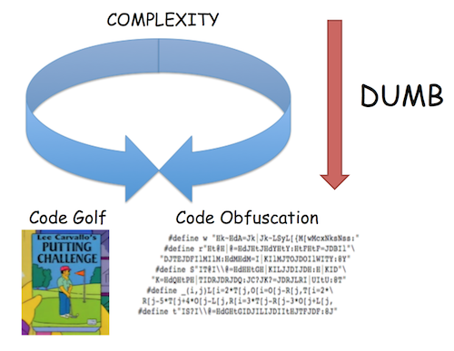
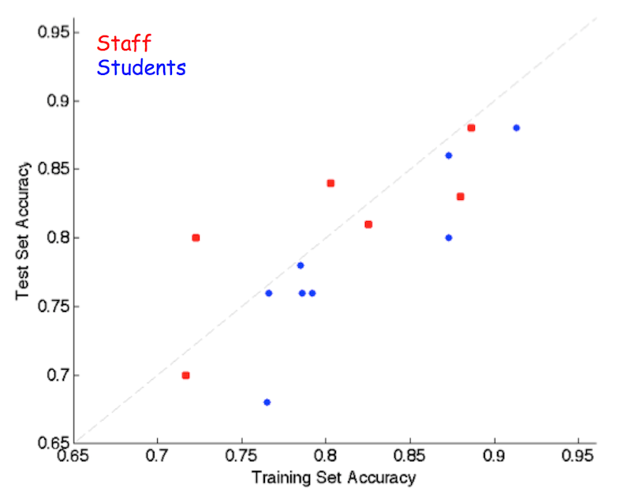
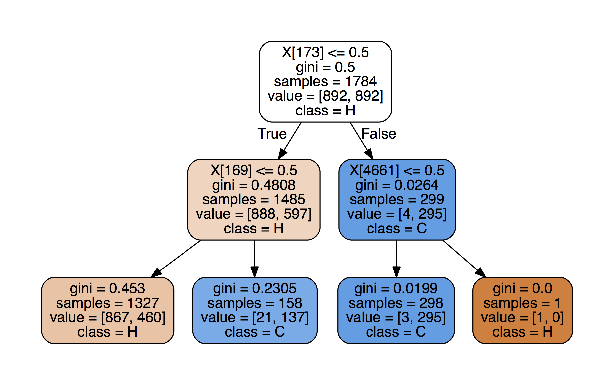
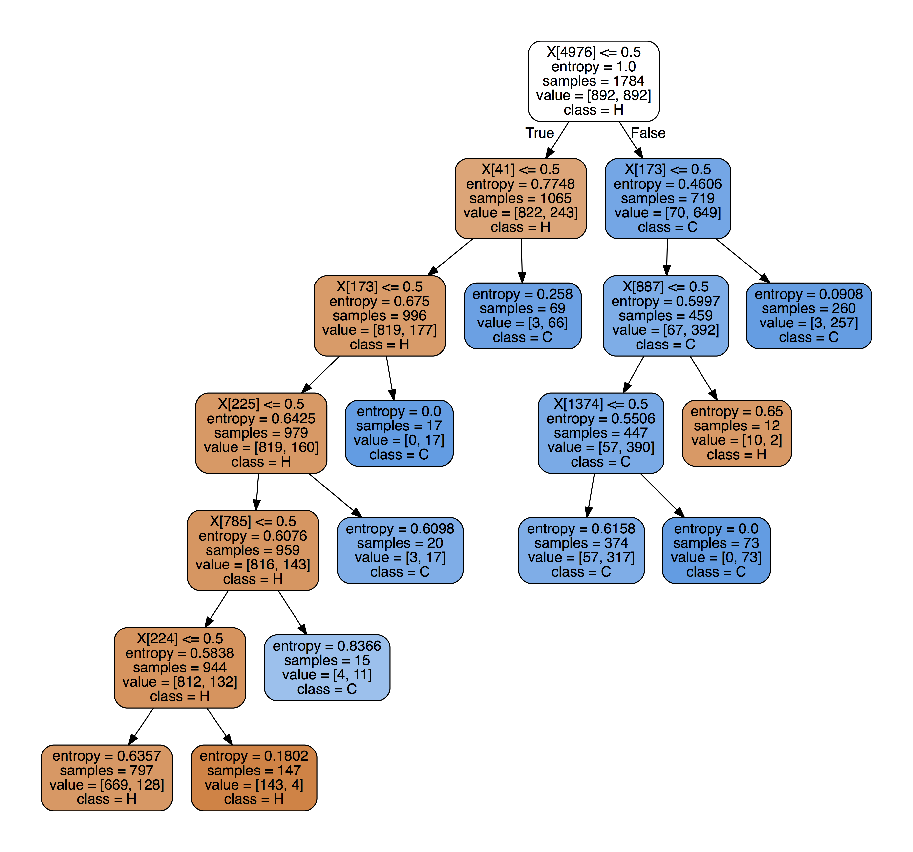

This past fall, I was a TA for the world's first (to my knowledge) major-agnostic data science course, UC Berkeley's STAT/CS94 (now listed as STAT/CS C8). From the course website:
Foundations of Data Science combines three perspectives: inferential thinking, computational thinking, and real-world relevance. Given data arising from some real-world phenomenon, how does one analyze that data so as to understand that phenomenon? The course teaches critical concepts and skills in computer programming and statistical inference, in conjunction with hands-on analysis of real-world datasets, including economic data, document collections, geographical data, and social networks. It delves into social issues surrounding data analysis such as privacy and design.
Essentially, the course can be thought of as a mixture of data science and classical statistics, viewed through a computational lens rather than a mathematical one. This course aimed to be inclusive to non-CS majors—sociology, history, English—and was designed for them to pick up the relevant data science tools and bring them back to their respective fields. It is part of a push by Berkeley to bring now-ubiquitous computing tools to all disciplines.
Since the end of the class started getting into topics like prediction and estimation, the final project given to the students was binary song genre classification. The students were given an array of word frequencies (more on that later) with corresponding genres--each song was labeled either "Hip-hop" or "Country". The project involved a guided exploration (including the construction of a simple nearest-neighbor classifier) of what features (i.e. words) were most predictive of genre.
We then held a mini-competition for the students. An optional portion of the final project was to create the best possible classifier using any possible technique. The classifiers would be submitted be a due date, and I would then evaluate them on an unseen (to both the staff and the students) holdout set. The student with the highest prediction accuracy on the holdout set would then be declared the winner.
Naturally, being the competitive jerk person that I am, I tried to figure out a way I, the TA, could weasel my way into this competition. Obviously, having years of programming and machine learning experience would make it a bit unfair, so I had to come up with a suitable handicap.

This nice illustration represents my solution. I have always been fascinated by what I categorize as "dumb fun coding stuff" and am a frequent lurker of codegolf.stackexchange (for the uninitiated, "code golf" is the game of trying to accomplish a programming task in as few characters or bytes as possible). Thus, after some iteration, I came up with the following Staff/TA classifier handicap rules:
np , and nothing else. Your model and testing logic must therefore fit in the 140 characters. That is, it must run in a new notebook — you can not use things like train_lyrics in your expression.There are three big constraints here.
scikit-learn and other packages to train or optimize some of the classifiers offline).With these constraints in place, we set off to try to cram as much prediction power as we could into a Tweet.
The main difficulty in creating these "Tweetifiers" was point number 2 above; namely, fitting the entire model inside the Tweet. Fortunately, Python3 comes with native Unicode support. I'm still fuzzy on the encoding/decoding details, but for my naive purposes it meant that I can represent integers less than 0x110000 with a single character, and convert back and forth between integers and characters with the built-in chr() and ord() functions.
However, I had some trouble with storing large numbers as strings directly using the Python struct package (again, fuzzy on the encoding details), but this StackOverflow answer provided some nice functions to do what I wanted:
N = 20 #How many bits per character
def num_to_bytes(num):
bytes = []
num = abs(num)
while num > 0:
bytes.append(chr(num % 2**N))
num >>= N
return ''.join(reversed(bytes))
def bytes_to_num(bytes):
num = 0
for byte in bytes:
num <<= N
num += ord(byte)
return num
#Example
x = 3**333
x_as_string = num_to_bytes(x)[::-1]Note that most times we would like the lower-order bits to come first in the string, as iterating from low to high bits was usually more efficient for code golfing purposes.
Since $\log_2$(0b110000) is a little more than 20, it means that with this encoding, our Tweet can carry $20\cdot 140 = 2800$ bits of information. Obviously, the practical limit for our model is much less since we need to include syntax and the testing logic as well.
Many of the staff tweet classifiers had to explore the tradeoff between expressiveness (more characters devoted to code) and model complexity. There was often another tradeoff between bits of precision used to specify constants (say, feature weights) and the number of constants you could fit in the model. Having to trade apples for oranges and testing out different configurations was really interesting--for example is a np.tanh() call worth 9 fewer features in your model?
Before we go into each staff entry, let's take a look at how they performed vs. the student entries.

As you can see, the handicap I set in place was reasonable!. Though the students seemed to overfit a bit more, the test set scores were comparable. One thing to note is that in a class of ~120, there were only 8 entries. In reality, there were about 15-20 entries, and I could only get 8 of them to run without error after no or small modifications.
As a final aside, I am going to list the things about this experiment that were not so great:
Without further ado, let's take a look at the staff entries! A few of them have line breaks added to fit on the page, and should be removed for Tweeting/testing. As a final test, these classifiers were all required to be Tweeted out on the official CS94 Tweetifiers Twitter account!
lambda r:(1/min(filter(None,r)))>319 #bigdataThe original inspiration/proof-of-concept for the code golf idea. Remember how earlier I mentioned that word frequencies were given to the students instead of word counts? Well, that was because the using only the song length (in terms of words) was enough to distinguish between genres at about 80% accuracy, since most hip-hop songs are longer than country songs.
Thus, we tried to mask this by giving the frequencies instead. However, we (as well as a couple students) quickly realized that one could reverse engineer the song length from word frequencies under the mild assumption that each song has a word that only occurs once. This classifier does exactly that, and uses the split of 319 words that was determined best by cross-validation.
The final version was golfed down from this initial prototype:
lambda x: ['Country','Hip-hop'][1/np.min([z for z in x if z>0]) >= 319]lambda r:1<<hash(r[1])%1280&sum(ord(w)<<z*20for w,z in
zip('𤠂₊𠐁𘈠,‐薀ࠁ刂耰䀰𤀀쐈𤀂萠Ј𥈁𠐠脄쀐𤀠ᠠÁ 𑄆⠌䐠ऀ𦀪@𨀈耑𗌄䐀',range(64)))>0This entry created a hash table/bloom filter of the artists names. I was trying to create an example that overfit heavily to the training set, but as stated in the "Caveats" it turned out that most of the holdout set artists were also in the training set, so this one did relatively well. Let's take a look at how this works.
1<<hash(r[1])%1280I first take the artist name string stored in r[1], run it through my hash function (the built-in hash followed by %1280) to get an index, and then create the integer with the index bit set to 1. This number represents the location we will be checking in the hash table—that long string of gibberish characters.
sum(ord(w)<<z*20for w,z in
zip('𤠂₊𠐁𘈠,‐薀ࠁ刂耰䀰𤀀쐈𤀂萠Ј𥈁𠐠脄쀐𤀠ᠠÁ 𑄆⠌䐠ऀ𦀪@𨀈耑𗌄䐀',range(64)))This section takes the hash table stored as a string and unpacks it into a very big integer. Each character in the long string stores 20 bits of the table. To recreate the table, we convert each character to a number with ord and then shift it the appropriate number of bits (i.e. shift the 2nd character 20 bits, the 3rd 40 bits and so on), and then sum them up to get a 20*64=1280 bit number. I spent a lot of time trying to golf this one down (using things like map and implicit NumPy array operations), but this is the best I came up with.
Finally, we check to see if the artist is in the hash table by &ing the two numbers together and returning True if the result is not zero.
How did we create the hash table from the training data? The snippet below created a hash table with bits set to 1 if the song of the hashed artist was tagged as 'hip-hop':
tlen = 1280
hashes = []
for r in train_lyrics.values[:,1:]:
hashes.append(hash(r[1]) % tlen)
htable = 0
hh = train_lyrics['Genre'] == 'Hip-hop'
for (i,h) in enumerate(hashes):
if hh[i]:
htable = (1 << h) | htableAs with any hash table, there will be some proportion of collisions based on the size of the table. For the chosen size of 1280 (based on the 64 available characters for storing the hash table string after all other syntax was golfed and taken into account), the 374 unique artists in the training set led to an integer with 325 bits set to 1, a collision rate of about 13%.
Remember my late addition to the rules concerning Python environment variables? Well, thanks to a change implemented in Python 3.3, the seed for the hash() function is randomly set at the start of each Python process. This behavior can be changed by modifying the PYTHONHASHSEED environment variable.
Without turning off this behavior, I would have created a hash table under one seed and then come test time, would be hashing the holdout artists' names with a different random seed, leading to garbage results. Thus, I added the final rule in the TA handicap to skirt around this issue. Obviously, full exploitation of the rule could result in storing arbitrary amounts of data inside environment variables, but I (the unchecked judge, jury, and executioner of the whole competition) felt my exception was within the spirit of the challenge. Plus, bending the rules is a code golf tradition!
lambda a: sum([a[ord(i)>>7]*((0.285*(ord(i)%128))+-15.14) for i in
"ૂପழౌಾඬགྲႳᄽᆨማውፊᎣᒴᔸᠫᤲᭌᮒ᰻ḜềἮῌ≇⏕┷⛒⦺⪀⪶ⱋㆵ㒰㷸㼾䂵䅍䈲䊘䒸䛘䤵䪹䴨仓哆嚀埈墎娫急溥牞稳笪籢螶"])>0This is a sparse linear classifier with fixed-precision weights. The index of each feature is stored in the high 13 bits of each character, and the weight in the low 9 bits.
(0.285*(ord(i)%128))+-15.14This operation simply shifts the weight range from [0-127] to about [-15,21].We perform a dot product of the input vector with this weight vector by unpacking the index/coefficient pair stored in each character.
From the creator, my colleague Evan Sparks:
I reasoned that given the hard limit of 140 characters for both the model and the code to apply it, I would need a model that was both compact and straightforward to apply. A natural candidate was L1-Regularized Linear Regression AKA Lasso - Lasso has the benefit of encouraging sparsity in the model parameters as well as being straightforward to apply. I sketched out some code for applying my model:
lambda x: sum([x[i]*w for i,w in model]) > 0
which computes the dot product of the sparse model and the feature vector.Given that all the code around "model" would have to be fixed, I reasoned that I had about 100 characters left. I opted for a bit packing scheme which encoded the offset in the feature vector into the highest 9 bits of each unicode character, and the weight into the lowest 7 bits.
There were a few bytes spent on unpacking, as well as some wasted precision, but this meant that I could fit about 70 model parameters in the final tweet. This 9/7 ratio was determined empirically to give enough access to the feature space without losing too much precision on the parameter weight.
A couple hundred parameters would have been optimal, but this was enough to achieve performance that was better than a really simple strategy that looked for the presence of a small handful of words.
lambda r:sum(np.tanh(sum(r[c%8192]*(2*(c>>19)-1)*1.4**-(c>>13&63)for c in map(ord,w)))for w in
["","𦁐","",""])>0From the creator and current TA of CS C8, Henry Milner:
My classifier is a 2-layer neural network with tanh activations and an output node that is fixed to sum its inputs (so it has no parameters). The training objective was the hinge loss plus L2 and L1 regularization. I trained with batch stochastic gradient descent using Theano. (After the training objective stopped changing, I chose the best model I’d seen in terms of held-out accuracy, which is another kind of regularization.) I used iterative soft shrinkage for the L1 term to ensure the weights were actually sparse, though I’m not sure I’d recommend that approach. I had to muck around with the step size and regularization parameters to get a reasonable network with the right degree of sparsity; if I’d spent the time to do a more systematic sweep of those hyperparameters, I suspect the network would have turned out better. I encoded the weights as key/value pairs: Each 20-bit Unicode character uses 13 bits to encode the feature for which it’s a weight and 7 bits for the weight. The weights turned out to be roughly uniform in log scale, so I encoded them with 1 sign bit and 6 magnitude bits. This is a lossy encoding of the weights, but it didn’t turn out to increase the held-out error, so that seemed okay.
(lambda f:lambda x:f(f,x,'ᔱ𤚲 ',173,1))(lambda t,r,s,i,p:
(lambda n,Q:(p^Q+1)*(p>9)or t(t,r,s[p*Q+1:],n(s[p*Q])>>5,n(s[p*Q])&31))(ord,r[i]>0))This was probably my most ambitious attempt (but unfortunately the worst-performing). I implemented a decision tree as a recursive anonymous function. Using ideas from lambda calculus, a recursive anonymous function can be created in Python by first making a higher-order anonymous function that "recursivizes" your desired function. For example, a (poor) way to compute the Nth triangular number:
triangle = (lambda g:lambda x:g(g,x))
# Takes a function g(.) and returns recursive
# version with itself as the first argument
(lambda f,y: 1 if y==1 else y + f(f,y-1))
triangle(5) #returns 15To have any hope of deciphering this tweetifier, let's look at a de-golfed version.
def dt(row, string='ᔱ𤚲 ', index=173, pointer=1):
if pointer > 9: #We are at a leaf node
right = row[index]>0
return pointer^(right+1) #returns either a 16 or 19
else:
if row[index]>0: #Left subtree
shift = pointer
else: #Right subtree
shift = 0
n_string = string[shift+1:]
n_index = ord(string[shift])>>5 #High 13 bits
n_pointer = ord(string[shift])&13 #Low 5 bits
return dt(row,n_string,n_index,n_pointer)The function dt takes in 1) the test row of word frequencies, 2) a string containing the remaining portion of the decision tree, 3) the current feature to split on, and 4) a pointer to start of the left subtree in string (the right one starts at the beginning of the string).
If we are currently at a leaf node, we split on the final feature and output the predicted class (in the form of a 16 or a 19). Else, we recursively call the function with the new subtree and extract the new feature index and pointer from the relevant character.
We stored the index in the high 13 bits ($\log_2$(4978 features)=12.28) and the pointer to the left subtree in the low 5 bits. The low 5 bits also serve a dual purpose when the node is a leaf node: if we assume that we will never shift more than 9 characters for a subtree (an early guess on the max size of potential trees) we can use the numbers 10-31 to encode the leaf output. Letting pointer equal 0b10010 for a left=Hip-hop and right=Country configuration and letting pointer equal 0b10001 for the opposite gives the desired behavior of outputting (through pointer^(right+1)) a 16 for Country and a 19 for Hip-hop.
As you might guess with such a convoluted system, there are many caveats:

The tree was trained using the scikit-learn package, using 10-fold cross validation to choose parameters. While I felt that this was the coolest entry, it was definitely not the best-performing.
lambda r:[(r[41]+r[173]+r[225]+r[785])>0,(r[173]==0 and r[887]>0)==0]
[(1/min(filter(None,r)))>319]The winner of the classification challenge! A hard-coded decision tree trained using scikit-learn which included the very predictive song length feature as seen in classifier #1. The tree is shown below (with song length as appended feature 4976). Notable words split on were "yo", "guitar", "rap", "old", and "da".

Again, I used 10-fold cross validation to set the maximum depth of the tree. I then had to stare at the above table and come up with a compact Boolean representation (though in this case I had a lot of room to spare). A larger tree would have required some Karnaugh map-esque trickery.
This competition gave me a really interesting perspective on model selection and evaluation, and it also exposed me to a lot of cool dirty code golf hacks that I now have in my back pocket (and hopefully never have to use!). I'm sure there is some truly deep idea about information theory or VC dimension or automata hiding under all of this insanity, but I will leave the discovery of such an idea as an exercise to the reader.
The raw data was collected from the Million Song Dataset and packaged nicely by Xinghao Pan.
I was a little lax on specifying which features to use when sending this to other staff members, so the following table shows the format of features you need to pass in: words is word stems, meta is artist and song title, and index is just the row number. The table also shows the output for each class.
| Classifier | Features | Country | Hip-Hop |
|---|---|---|---|
| 1. Silly | words | False | True |
| 2. Hash | meta, words | False | True |
| 3. Linear | index, meta, words | True | False |
| 4. NN | words | False | True |
| 5. Rec DT | words | 16 | 19 |
| 6. DT | words | False | True |
Feel free to send any questions or comments to boczar@berkeley.edu.